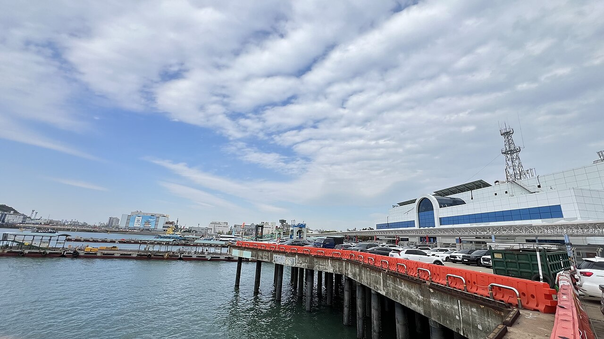
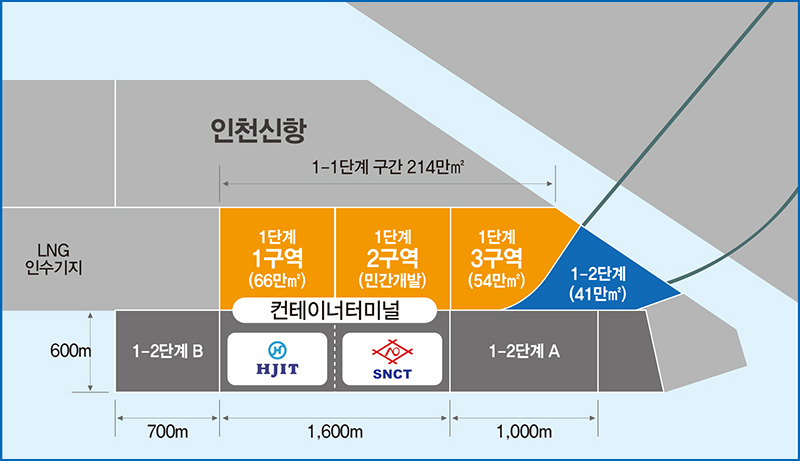
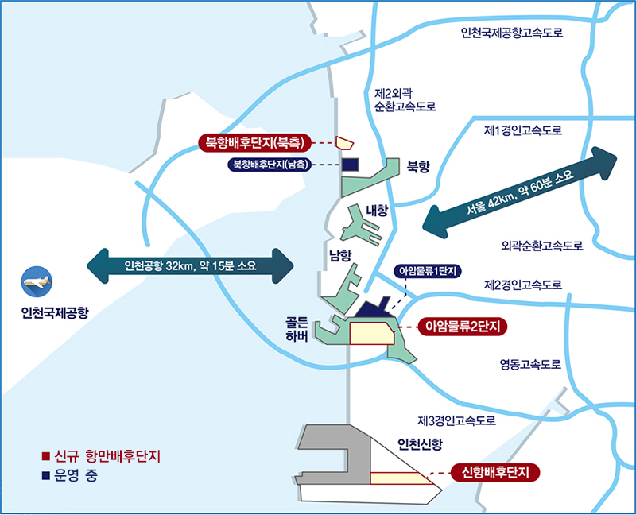
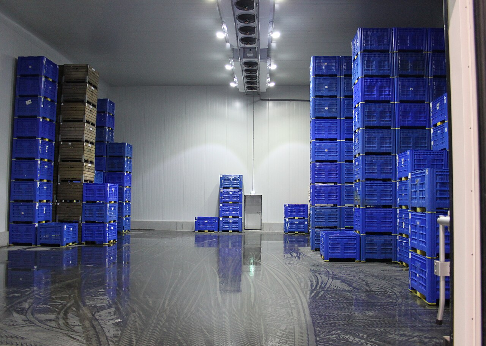

[해양 AI 융복합④] 항만 첫 데이터센터 품는 인천 신항, 착공은 또 2027년 하반기 뒤로
세계 데이터센터 전력 수요 2025년 17% 증가, 냉열과 해수 쥔 항만이 후보지로
입주기업 선정 5년 만에 임대차 계약, 사업비는 5310억원으로 늘어
AI가 쓰는 전기는 대부분 데이터센터에서 소비된다. 그 데이터센터가 바닷가로 온다. 인천항과 부산 산업단지에서 벌어지는 일을 짚는다.
1. 전력소비 6년 만에 두 배
국제에너지기구는 2025년 4월 보고서 '에너지와 AI'를 냈다. 에너지경제연구원 신정수 연구위원이 데이터센터 전력 부분을 간추려 4월 28일 『세계 에너지시장 인사이트』에 실었다.
2024년 세계 데이터센터 전력소비는 약 415테라와트시로 추정됐다. 1테라와트시는 10억 킬로와트시다. 세계 전력소비의 약 1.5%에 해당한다.
2030년에는 약 945테라와트시로 2024년의 두 배를 넘을 것으로 전망됐다. 이 기간 연평균 증가율은 약 15%다. 데이터센터를 뺀 나머지 부문 전력소비 증가율보다 네 배 이상 빠르다.
늘어나는 몫을 뜯어보면 절반 가까이가 AI 연산을 맡는 가속서버 몫이다. 기존 서버와 냉각 등 기반설비는 각각 약 20%를 차지한다.
전력소비는 몇몇 지역에 몰려 있다. 미국과 중국, 유럽 세 곳이 세계 데이터센터 전력소비의 약 85%를 쓴다. 미국 몫만 세계의 45%가량이다.
국제에너지기구는 2026년 4월 후속 보고서 '에너지와 AI 핵심 질문'을 냈다. 2025년 데이터센터 전력 수요가 17% 늘었다고 밝혔다. 세계 전력 수요 증가율 3%의 다섯 배가 넘는다.
2. 인천항이 쥔 냉열과 해수
인천 신항 배후단지 콜드체인 특화구역은 해양수산부가 2020년 지정했다. 초저온 냉열로 의약품과 육류, 채소 같은 화물을 보관하는 물류단지 자리다.
사업자 한국초저온인천은 2025년 말 사업계획을 바꿔 데이터센터를 더했다. 물류센터와 지원시설 연면적 19만8479㎡ 가운데 약 10%인 2만700㎡가 데이터센터다.
항만 배후단지에 데이터센터가 들어서는 것은 처음이다.
인천항만공사는 관련 법이 바뀌어 항만 배후단지에 데이터센터를 지을 수 있게 됐다고 밝혔다.
데이터센터는 열을 식히는 일이 관건이다.
단지는 인근 한국가스공사 인천LNG기지에서 나오는 영하 162℃ 냉열을 끌어 쓸 계획이다. 경인일보는 바닷물을 냉각수로 쓸 수 있다는 점도 강점으로 꼽았다.

자동화 항만과 맞물리는 대목도 있다. 경인일보에 따르면 한 항만업계 관계자는 네덜란드 로테르담항처럼 자동화 터미널을 돌리는 항만이 데이터센터를 부대시설로 둔 사례가 많다고 설명했다.

3. 착공 목표가 또 밀렸다
인천항만공사는 2026년 9월 말 한국초저온인천과 특화구역 A타입 부지 11만8000여㎡ 임대차 계약을 맺었다. 한국초저온인천이 2021년 9월 입주기업으로 뽑힌 지 약 5년 만이다.
애초 착공 목표는 2021년이었다. 원자잿값이 오르고 건설 경기가 나빠지면서 자금 조달에 차질이 생겼다. 착공 목표는 2024년과 2025년으로 잇따라 밀렸다.
중부일보는 2026년 8월 착공 목표가 2027년 1분기로 다시 바뀌었다고 전했다. 인허가에 약 6개월이 걸린다는 인천항만공사 전망이 근거였다.
10월에 새로 나온 전망은 그보다 더 늦다.
인천항만공사는 데이터센터를 넣은 인허가 절차를 2027년 하반기께 마친 뒤 본격 착공할 것으로 내다봤다. 사업비도 5218억원에서 5310억원으로 92억원 늘었다.
물류센터 시공은 한국초저온인천이 맡고 데이터센터 운영은 별도 전문기업이 맡을 것이라고 인천항만공사 관계자는 말했다.
4. 2019년 논문이 짚은 것
안길섭·오재균·양태현·여기태 인천대 동북아물류대학원 연구진은 2019년 『디지털융복합연구』에 이 클러스터를 다룬 논문을 실었다. 요인을 둘씩 견주어 중요도를 매기는 방법으로 입주 결정 요인을 쟀다.
상위 요인에서는 '안정성·수익성'이 0.281로 가장 높았다. 세부 요인에서는 지속가능한 물동량 확보가 첫머리에 놓였고 임대료 수준이 뒤를 이었다. 그다음은 LNG 냉열 활용 기술의 지속 가능성, 일반 냉동·냉장창고와 벌이는 경쟁, 시설 중복투자 배제 순이었다.

논문이 첫머리에 놓은 것은 물동량이었다. 코로나19 뒤 건축 자재비가 뛰고 저온 물류시설 수요가 줄면서 한국초저온인천이 투자금을 모으기 어려웠다고 파이낸스스코프와 핀포인트뉴스는 전했다.

데이터센터를 들인 까닭도 수익성이다. 화물이 기대만큼 차지 않으면 창고 운영이 어려워지는데, 데이터센터가 추가 수익원이 된다고 인천항만공사는 판단했다.
5. 부산은 산단에 연산장비를 깐다
부산시는 2026년 7월 13일 공모 결과를 밝혔다. 산업통상부가 주관한 '2026년 산업단지 엣지 AIDC 실증 시범사업'에 부산 조선·해양 엣지 AI 데이터센터 구축사업이 뽑혔다.
대상지는 조선기자재와 기계·금속 기업이 모인 명지녹산국가산업단지다.
산업단지 입주기업이 함께 쓰는 AI 연산 설비를 짓는 사업이다. 사업비는 183억원으로 국비 140억원, 시비 21억원, 민간 22억원이 들어간다. 한국산업단지공단 부산지역본부가 사업을 맡는다.
데이터센터에는 그래픽처리장치 32장과 국산 신경망처리장치 168장이 들어간다. 그래픽처리장치는 AI를 가르치고 시험하는 일을, 신경망처리장치는 다 배운 AI로 답을 내는 일을 맡는다.
여기서 제조 소프트웨어 세 가지를 실증한다. 공장 자동화, 카메라 영상을 분석해 사고를 막는 산업안전, 설비 고장을 미리 잡아내는 예지보전이다. 구축 기간은 2027년 6월까지이고 그 뒤 5년을 의무 운영한다.
부산시와 한국산업단지공단은 2026년 12월 베타 오픈을 목표로 한다. 인천이 땅을 빌리는 데 5년이 걸리는 사이, 부산은 사업이 뽑힌 지 다섯 달 만에 시범 가동을 노린다.
참고문헌
가. 공식 발표자료와 공공기록
· 신정수, 「세계 데이터센터 전력 수급 현황 및 전망(IEA)」, 『세계 에너지시장 인사이트』 제25-8호, 에너지경제연구원, 2025.4.28., 1~10쪽, https://www.keei.re.kr/boardDownload.es?bid=0014&list_no=125052&seq=1
· International Energy Agency, 『Energy and AI』, World Energy Outlook Special Report, 2025.4., https://www.iea.org/reports/energy-and-ai
· International Energy Agency, "Data centre electricity use surged in 2025, even with tightening bottlenecks driving a scramble for solutions"(『Key Questions on Energy and AI』 발간 보도자료), 2026.4.16., https://www.iea.org/news/data-centre-electricity-use-surged-in-2025-even-with-tightening-bottlenecks-driving-a-scramble-for-solutions
나. 연구보고서와 논문
· 안길섭·오재균·양태현·여기태, 「LNG 냉열을 활용한 인천항 냉동·냉장 클러스터 입주요인 분석 및 활성화 방안 연구」, 『디지털융복합연구』 제17권 제2호, 한국디지털정책학회, 2019.2., 101~111쪽, https://doi.org/10.14400/JDC.2019.17.2.101
다. 언론 보도
· "인천항 초저온 물류단지에 '데이터센터' 들인다", 경인일보 김주엽, 2026.2.25., https://www.kyeongin.com/article/1759503
· "인천신항 콜드체인 클러스터 착공 또 연기… 내년 1분기 전망", 중부일보 노선우, 2026.8.9., https://www.joongboo.com/news/articleView.html?idxno=363733391
· "부산, 조선·해양 AI 인프라 구축 시동…명지녹산산단에 엣지 데이터센터", 더퍼블릭 유수진, 2026.7.13., https://www.thepublic.kr/news/articleView.html?idxno=310997
· "영하 162도 LNG 냉열로 데이터센터 냉각…인천 신항에 물류단지 조성", 핀포인트뉴스 서용균, 2026.10.12., https://www.pinpointnews.co.kr/news/articleView.html?idxno=494248
· "인천 신항 배후단지에 국내 최초 '데이터센터 품은 물류단지' 조성", 파이낸스스코프 윤영훈, 2026.10.12., https://www.finance-scope.com/article/view/scp202610120003
· "인천 신항에 LNG 냉열 활용 물류단지·데이터센터 조성 추진", 기계설비신문 정덕수, 2026.10.12., https://www.kmecnews.co.kr/news/articleView.html?idxno=52248
· "IEA warns AI data centre electricity use will triple by 2030", E+T Magazine, 2026.4.22., https://engx.theiet.org/b/articles/posts/iea-warns-ai-data-centre-electricity-use-will-triple-by-2030
마. 사진 출처
· [사진1] BalticServers.com(위키미디어 공용 이용자 Fleshas), "BalticServers data center.jpg", 위키미디어 공용, CC BY-SA 3.0, https://commons.wikimedia.org/wiki/File:BalticServers_data_center.jpg
· [사진2] Jjw, "20050502 Port of Incheon 017.jpg", 위키미디어 공용, CC BY-SA 4.0, https://commons.wikimedia.org/wiki/File:20050502_Port_of_Incheon_017.jpg
· [사진3] Kopiersperre, "Großer Kühlraum (Elbe-Obst Jork).jpg", 위키미디어 공용, CC BY-SA 3.0, https://commons.wikimedia.org/wiki/File:Gro%C3%9Fer_K%C3%BChlraum_(Elbe-Obst_Jork).jpg
· [도표1] 인천항만공사, 「인천신항 배후단지 배치도」, 인천항만공사 누리집 항만배후단지 현황, 공공누리 유형 표시 없음(저작권법 제24조의2 제1항), https://www.icpa.or.kr/main.do?menuKey=117
· [도표2] 인천항만공사, 「인천항 항만배후단지 위치도」, 인천항만공사 누리집 항만배후단지 현황, 공공누리 유형 표시 없음(저작권법 제24조의2 제1항), https://www.icpa.or.kr/main.do?menuKey=117